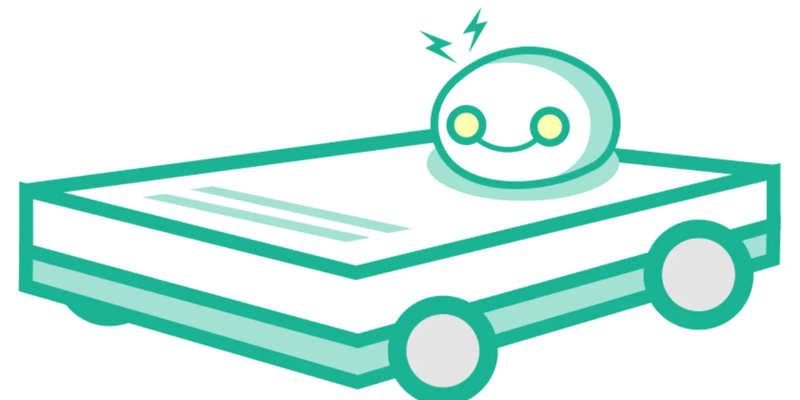

향후 10년 로보틱스에서 가장 큰 기회는 휴머노이드 영상보다 더 조용한 곳에서 나올 가능성이 큽니다. 물류창고, 병원, 음식 배달, 반도체 테스트 장비, 공장 자동화처럼 사람이 반복적으로 하던 일을 로봇과 자동화 시스템이 대신하는 영역입니다. 문제는 이 산업이 좋아 보인다는 사실과 지금 주식이 싸다는 판단은 전혀 다른 문제라는 점입니다.
2026년 6월 12일 종가 기준으로 보면 심보틱은 52주 고점 대비 약 52.6%, 서브 로보틱스는 약 62.6%, 리치테크 로보틱스는 약 71.3% 내려와 있습니다. 숫자만 보면 모두 싸 보입니다. 하지만 주가가 많이 빠진 회사가 모두 저평가인 것은 아닙니다. 어떤 회사는 성장주 조정으로 싸졌고, 어떤 회사는 사업 검증이 부족해서 싸졌고, 어떤 회사는 공시와 회계 신뢰 문제 때문에 싸졌습니다.
그래서 이 글의 결론은 단순합니다. 로보틱스 저평가 후보를 고를 때는 주가 낙폭이 아니라 살아남을 매출을 먼저 봐야 합니다. 현재 기준으로 가장 먼저 확인할 종목은 심보틱입니다. 서브 로보틱스는 성공하면 보상이 클 수 있는 옵션형 후보이고, 리치테크 로보틱스는 현금 여력보다 공시 신뢰 회복을 먼저 확인해야 하는 후보입니다. 테라다인은 좋은 로봇 노출 기업이지만 현재 가격에서는 저평가 급락 후보라기보다 비교 기준에 가깝습니다.
로봇 산업은 세 갈래로 나눠 봐야 합니다

로보틱스 주식을 볼 때 첫 번째로 해야 할 일은 로봇을 하나의 산업으로 뭉뚱그리지 않는 것입니다. 첫 번째 축은 심보틱 같은 물류창고 자동화입니다. 고객은 대형 유통사, 식료품 체인, 물류센터 운영사입니다. 이 영역은 로봇 한 대의 성능보다 시스템 전체의 처리량, 설치 속도, 고객별 맞춤 설계, 유지보수 능력이 중요합니다.
두 번째 축은 서브 로보틱스 같은 자율주행 배송 로봇입니다. 이 영역은 도시 운영 허가, 원격 관제, 배터리, 사고 책임, 플랫폼 파트너십이 함께 필요합니다. 매출이 커지면 매력적이지만, 규모가 작을 때는 로봇 배치와 운영비가 먼저 늘어날 수 있습니다. 그래서 이 분야는 매출 성장률과 현금 소진 속도를 반드시 같이 봐야 합니다.
세 번째 축은 리치테크 로보틱스 같은 서비스 로봇과 로봇 구독 모델입니다. 식당, 호텔, 이벤트 공간, 상업시설에서 로봇을 판매하거나 대여하고, 장기적으로는 RaaS라고 부르는 로봇 서비스형 모델을 키우려는 구조입니다. 이론적으로는 반복 매출이 생길 수 있지만, 실제로는 고객이 계속 돈을 내고 쓰는지, 회계 처리와 공시가 깨끗한지 확인해야 합니다.
심보틱은 가장 먼저 볼 기본 후보입니다
관련 영상
심보틱이 순수 로보틱스 투자 후보인지 분석하는 영어 롱폼 영상
심보틱은 이 글에서 가장 먼저 볼 회사입니다. 이유는 로봇 테마가 아니라 숫자입니다. 2026 회계연도 2분기 매출은 6억7,600만 달러였고 전년 대비 23% 증가했습니다. 순이익은 900만 달러였고, 조정 EBITDA는 7,800만 달러였습니다. 현금과 현금성 자산은 20억 달러로 발표됐습니다. 아직 완벽한 회사는 아니지만, 적어도 로봇 자동화가 실제 매출과 이익으로 연결되고 있다는 점은 확인됩니다.
심보틱의 약점도 분명합니다. 물류 자동화 시스템은 설치 기간이 길고, 고객별 프로젝트 규모가 크며, 특정 대형 고객 의존도가 주가 할인 요인이 될 수 있습니다. 로봇 한 대를 많이 파는 회사가 아니라 고객의 물류센터 흐름 전체를 바꾸는 회사에 가깝기 때문에 매출 인식과 설치 일정이 흔들리면 주가도 크게 흔들립니다. 그래서 심보틱을 볼 때는 수주잔고, 신규 고객 수, 설치 지연, 현금흐름을 함께 봐야 합니다.
그럼에도 심보틱이 가장 현실적인 이유는 분명합니다. 로봇 산업에서 “이미 큰 매출이 있고, 현금도 있고, 고객이 실제로 시스템을 쓰고 있는 회사”가 많지 않습니다. 52주 고점 대비 절반 이상 내려온 가격은 관심을 가질 이유가 됩니다. 다만 이 가격이 기회가 되려면 다음 몇 분기 동안 매출 성장과 조정 EBITDA가 동시에 유지되어야 합니다.
서브 로보틱스는 옵션형 성장주입니다
서브 로보틱스는 심보틱과 전혀 다른 종목입니다. 심보틱이 창고 안의 자동화라면, 서브는 보도와 도시 안의 자율 배송 로봇입니다. 투자자 입장에서는 훨씬 더 상상하기 쉽습니다. 배달 로봇이 도시에 깔리고, 음식 배달과 병원 배송, 소매 배송으로 확장되면 장기 시장은 커질 수 있습니다.
문제는 아직 사업 규모가 작다는 점입니다. 2026년 1분기 매출은 300만 달러였고 전년 대비 578%, 직전 분기 대비 238% 증가했습니다. 성장률은 매우 강합니다. 회사는 2026년 연간 매출 가이던스를 약 2,600만 달러로 제시했습니다. 하지만 비일반회계기준 영업비용 가이던스가 1억6,000만 달러에서 1억7,000만 달러 수준이라는 점을 같이 봐야 합니다. 매출은 작고 비용은 큽니다.
서브의 장점은 유동성입니다. 2026년 1분기 말 기준 현금과 단기 시장성 증권을 포함한 유동성은 1억9,740만 달러로 발표됐습니다. 이 숫자는 회사가 당장 사라질 가능성을 낮춰줍니다. 그러나 이 돈은 성장을 위해 빠르게 쓰일 수 있습니다. 주주가 봐야 할 핵심은 로봇 대수 증가가 매출로 이어지는 속도, 도시별 허가 확대, 파트너 주문량, 로봇당 매출, 사고와 운영비입니다.
서브는 “파산하지 않고 버틸 수 있느냐”보다 “희석 없이 버틸 수 있느냐”가 더 중요한 종목입니다. 주가가 52주 고점 대비 60% 넘게 빠졌다는 점은 매력적으로 보일 수 있지만, 앞으로 추가 자금조달이 필요해질 경우 주주 지분 희석이 생길 수 있습니다. 그래서 서브는 안정형 저평가주가 아니라 성공 확률이 열리면 크게 움직일 수 있는 고위험 성장 옵션으로 보는 편이 맞습니다.
리치테크는 현금보다 공시 신뢰가 먼저입니다
리치테크 로보틱스는 겉으로 보면 가장 싸 보입니다. 주가 낙폭은 세 후보 중 가장 크고, 2025년 12월 말 기준 현금과 단기투자를 합치면 3억 달러가 넘는 유동자산이 확인됩니다. 또한 2026 회계연도 1분기 매출은 114만7,000달러였고, 회사는 제품 판매보다 서비스, 렌털, RaaS 매출을 키우려는 방향을 설명했습니다.
그런데 리치테크는 가격보다 신뢰가 먼저입니다. 최근 회사는 NT 10-Q와 여러 8-K를 제출했고, 공시와 회계 관련 확인이 이어지고 있습니다. 직전 10-Q에서도 내부통제와 매출 인식, 재고, 투자, 무형자산 같은 항목이 중요한 점검 대상이라는 문맥이 보입니다. 초소형 로봇주에서 이런 이슈는 단순한 서류 문제가 아니라 밸류에이션의 핵심입니다.
리치테크가 살아남을 가능성을 보려면 현금 보유액만 보면 안 됩니다. 실제 로봇 매출이 반복 매출로 바뀌는지, RaaS 매출이 일회성 대여보다 빠르게 커지는지, 회계 재작성이나 지연 제출이 해소되는지, 매출총이익률이 유지되는지 확인해야 합니다. 이 네 가지가 해결되면 싸게 보이는 가격이 의미를 가질 수 있습니다. 반대로 공시 신뢰가 회복되지 않으면 아무리 현금이 많아도 투자자는 할인율을 높게 둘 수밖에 없습니다.
테라다인은 좋은 회사지만 저평가 후보는 아닙니다
테라다인은 로보틱스 노출이 있는 훌륭한 대형 기술 장비 회사입니다. Universal Robots와 Mobile Industrial Robots를 통해 협동로봇과 자율 이동 로봇 노출을 갖고 있습니다. 하지만 테라다인은 반도체 테스트 장비 사업의 비중도 크고, 2026년 6월 12일 기준 주가가 52주 고점에서 약 4.5%밖에 내려오지 않았습니다. 이 글의 기준인 “주가가 많이 빠진 저평가 로봇 후보”와는 맞지 않습니다.
그래서 테라다인은 매수 후보라기보다 비교 기준으로 쓰는 편이 좋습니다. 시장은 좋은 사업과 확실한 재무 구조에는 이미 높은 가격을 줄 수 있습니다. 반대로 심보틱, 서브, 리치테크는 기대와 리스크가 동시에 커서 가격이 많이 흔들립니다. 저평가 후보를 찾는다는 것은 결국 더 불편한 숫자를 감수하고 미래의 매출 품질을 판단하는 일입니다.
만약 투자자가 안정성을 더 중시한다면 테라다인이나 인튜이티브 서지컬 같은 대형 로봇 노출 기업을 비교 대상으로 삼는 편이 낫습니다. 그러나 10년 수익률의 비대칭성을 찾는다면 이미 비싸진 대형주보다 심보틱 같은 중형 성장주와 서브 같은 옵션형 회사를 따로 분류해 보는 것이 더 현실적입니다.
결론은 싼 주식보다 살아남을 매출입니다
향후 10년 로보틱스 산업은 성장할 가능성이 높습니다. 인건비 상승, 물류 자동화, 고령화, 제조 리쇼어링, 도시 배송 자동화가 모두 로봇 수요를 밀어 올릴 수 있습니다. 그러나 투자자는 산업 전체가 커진다는 말에 속으면 안 됩니다. 산업이 커질수록 경쟁사도 늘고, 고객은 더 까다로워지고, 약한 회사는 자금조달로 버티다가 주주 지분을 희석할 수 있습니다.
현재 기준으로 가장 합리적인 우선순위는 이렇습니다. 1순위는 심보틱입니다. 이미 큰 매출과 현금, 조정 EBITDA가 있고, 주가도 고점 대비 크게 내려와 있습니다. 2순위는 서브 로보틱스입니다. 매출은 작지만 성장률과 시장 상상력이 크고, 유동성도 있습니다. 다만 희석 리스크를 감수해야 합니다. 3순위는 리치테크 로보틱스입니다. 낙폭과 현금은 매력적이지만, 공시 신뢰와 반복 매출 검증이 끝나기 전에는 가장 조심해야 합니다.
좋은 로봇주는 멋진 시연 영상이 아니라 고객이 돈을 다시 내는 회사입니다. 다음 실적에서 봐야 할 숫자는 주가 낙폭이 아니라 매출의 반복성, 로봇당 매출, 고객 수, 매출총이익률, 영업현금흐름, 현금 소진 속도입니다. 이 숫자가 동시에 좋아지는 회사가 10년 뒤에도 살아남을 가능성이 큽니다. 이 글은 매수나 매도 추천이 아니라 로보틱스 저평가 후보를 비교하기 위한 정보형 분석입니다.